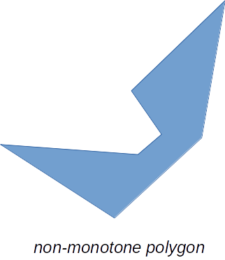
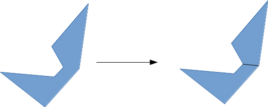
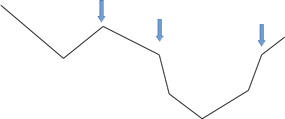

Polygon Triangulation
A Project by Christopher R. Wicks
for Computational Geometry
Rochester Institute of Technology
Fall 2016 Semester
Project Introduction
Plane-sweep algorithms are a fundamental way of conceptualizing an algorithmic solution to many problems in computational geometry. They involve moving a figurative hyperplane across an n-dimensional space, processing event points as we bump up against their physical location. Since we will be dealing with 2 dimensions, the hyperplane is in fact a line, and for our purposes we will refer to these algorithms as "sweep-line" algorithms. These algorithms tend to be intuitive in explanation, but can contain a lot of moving parts, which leads to the fact that implementation details and deeper understanding can often be elusive.
In this project, an attempt is made at visualizing a two-phase sweepline algorithm for triangulating arbitrary closed polygons. The first phase of the algorithm decomposes the input polygon into simpler, x-monotone polygons, and the second phase further simplifies the sub-polygons by decomposing them into triangles.
x-monotonicity
A polygon is said to be x-monotone if for any given vertical line on the plane, that polygon is intersected by that line at most twice. Fun fact: since monotonicity is defined with respect to a given axis, note that the example provided below is not y-monotone. If we were to run the algorithm from, for example, top-to-bottom instead of left-to-right, we would require a y-monotone polygon.


As stated previously, this is a two phase algorithm. The second phase of the algorithm requires monotone polygons as input, so in the first phase we break down an arbitrary closed polygon into monotone polygons.

The process for doing this is by using a sweep-line algorithm with one event per polygon vertex. We literally sweep across the polygon and any time we "bump into" a vertex, we process the event at that vertex.
Vertex Types for Event Processing
- Split: Vertex is the left endpoint of both of its incident edges, and its interior angle is greater than π
- Merge: Vertex is the right endpoint of both of its incident edges, and its interior angle is greater than π
- Start: Vertex is the left endpoint of both of its incident edges, and its interior angle is less than π
- End: Vertex is the right endpoint of both of its incident edges, and its interior angle is less than π
- Upper: Given a counter-clockwise orientation, the vertex is the right endpoint of its "next" edge and the left endpoint of its "previous" edge
- Lower: Given a counter-clockwise orientation, the vertex is the right endpoint of its "previous" edge and the left endpoint of its "next" edge
image source: David Mount's Lecture Notes for Computational Geometry
Monotone Polygon Subdivision Algorithm
First, we define Fix-up(v,e) as follows: if helper(e) is a merge vertex, add a diagonal from v to helper(e).
Recall too that the event vertices are in a list sorted by x-coordinate.
For each event vertex, v:
- If v is a split vertex: let e be the edge on the sweep-line immediately above v and add a diagonal connecting v to helper(e). Let e’ be the v’s lower incident edge. Make v the helper of both e and e’. Add v’s incident edges to the sweep-line status.
- If v is a merge vertex: delete its incident edges from the sweep-line status. Let e be the edge now lying immediately above v on the sweep-line. Let e’ be v’s lower incident edge. Fix-up(v,e) and Fix-up(v,e’). Make v the helper of e. *
- If v is an end vertex: delete its adjacent edges from the sweep-line status. Let e be v’s upper incident edge. Fix-up(v,e).
- If v is an upper vertex: let e be v’s left incident edge. Fix-up(v,e). Delete e from the sweep-line status and add v’s right incident edge. Make v the helper of its right incident edge.
- If v is a lower vertex: let e be the edge above v on the sweep-line status. Fix-up(v,e). Delete v’s left incident edge from the sweep-line status and add v’s right incident edge. Make v the helper of its right incident edge.
* This detail was missing from the algorithm source, but is crucial for the algorithm to function correctly
Algorithm source: David Mount's Lecture Notes for Computational Geometry.
Event Types for Polygon Triangulation
Now that we have subdivided our polygon into monotone polygons, we can use the next phase of the algorithm to triangulate each polygon individually! Much like with our previous sweep-line algorithm, there is only one event per polygon vertex, and they are sorted from left-to-right by x-coordinate. The event type for this algorithm is a little simpler, but like the previous algorithm corresponds to the vertex's location on the polygon:
- The leftmost vertex (there can only be one!)
- The rightmost vertex (again, only one!)
- An upper-chain vertex
- A lower-chain vertex
Reflex Chain
A given vertex on a monotone polygonal curve is said to be a "reflex" vertex if its interior angle is greater than π.
